Introduction
Ce rapport accompagne le relevé d'audit effectué sur le site « mobiliteit.lu ».
La méthodologie d'audit employée repose sur le référentiel RGAA 4, consultable à l'adresse suivante : https://accessibilite.public.lu/fr/rgaa4/criteres.html
L'audit a été réalisé au moyen de l'utilisation de navigateurs web et d'outils spécialisés. Des tests de restitution ont également été effectués conformément à la base de référence définie par le RGAA 4.
Échantillon
L'audit a porté sur un échantillon de 15 pages pour le niveau double A (AA) :
Environnement de test (base de référence)
Quelques critères RGAA, notamment ceux de la thématique JavaScript, incluent des tests de restitution à effectuer sur des technologies d'assistance associées à des navigateurs et des systèmes d'exploitation. Pour qu'un dispositif HTML / WAI-ARIA ou son alternative soit considéré comme compatible avec l'accessibilité, il faut qu'il soit pleinement fonctionnel, en termes de restitution et de fonctionnalités sur certaines combinaisons. Vous trouverez une explication détaillée de cet environnement de tests dans le document du RGAA 4.
Nous détaillons ci-dessous la base de référence utilisée pour réaliser les tests de restitution des composants du site.
Environnement de test – ordinateur
| Technologie d'assistance | Navigateur |
|---|---|
| NVDA 2020.3 | Firefox 82 |
| JAWS 2019 | Internet Explorer 11 |
| VoiceOver | Safari 14 |
Environnement de test — mobile
| Système d'exploitation | Technologie d'assistance | Navigateur |
|---|---|---|
| Android 10 | TalkBack (dernière version) | Chrome 86 |
Alerte : Les systèmes d’autocomplétion (champ de recherche d’itinéraire) ne sont pas utilisables correctement sur smartphone avec TalkBack (Android/Chrome).
Accessibilité des pages auditées
Le site présente un niveau général d’accessibilité moyen.
Le niveau moyen de conformité relevé atteint 32.86% de conformité sur l’ensemble des pages auditées, avec 28% de conformité au niveau simple A (A) et 45% de conformité au niveau double A (AA).
Le site est non conforme.
Conformité RGAA 4 du site
| Conforme | Non conforme | |
|---|---|---|
| A | 28% | 72% |
| AA (légal) | 32,86% | 67,14% |
Note sur le calcul de conformité
La conformité globale (Tableau « Conformité RGAA 4 ») est calculée de la manière suivante : C / (C+NC). C est le nombre de critères conformes et NC le nombre de critères non conformes.
C'est ce nombre qui constitue la référence légale. Il représente le taux de conformité de l'échantillon.
Il est normal que le taux de conformité global diffère sensiblement du taux de conformité par page. En effet, un critère NC (non conforme) sur une page rend le critère non conforme sur l'ensemble de l'échantillon.
Pour qu'un site soit conforme (100 % des critères applicables sont conformes au niveau AA), il est nécessaire que le taux de conformité par page équivaille à 100 %.
Impacts utilisateurs
Les principales personnes impactées sont les personnes aveugles. Certains problèmes liés aux scripts, à l’API ARIA et aux formulaires rendent parfois difficile l’utilisation de certaines fonctionnalités par ces utilisateurs. Également, les utilisateurs qui ont des troubles de la perception des contrastes sont impactés, puisque le site présente de nombreuses informations au travers de représentations graphiques, (icônes notamment), qui ne sont pas suffisamment contrastées.
Contenus dérogés
La dérogation est un moyen d'exclure du champ d'application du référentiel des contenus particuliers. Les cas de dérogations sont très encadrés, vous en trouverez le détail dans le guide des dérogations.
Les contenus suivants n'entrent pas dans le calcul de la conformité ni dans le périmètre des éléments à rendre accessible, ils sont dérogés :
- Les documents bureautiques qui ne sont pas sous la responsabilité du site : les textes légaux publiés sur la page « Droits des voyageurs » (P14 de l’échantillon).
- Les contenus suivants sont dérogés par application des exemptions définies dans le cadre réglementaire
- Les vidéos (absence de transcription textuelle, de sous-titres synchronisés et d'audiodescription) : page « mKaart » (P12 de l’échantillon).
- Les documents bureautiques publiés avant le 23 septembre 2020 : page « Droits des voyageurs » (P14 de l’échantillon)
Droit à la compensation
Les dérogations émises notamment pour charge disproportionnée demandent en contrepartie la mise en place d'un moyen de compensation pour les utilisateurs. Pour les documents bureautiques par exemple, vous devez fournir un moyen à l'utilisateur de demander une version accessible d'un document s'il en a besoin. Cela peut être un mail ou un formulaire contact.
Note sur le relevé des non-conformités
Ne sont cités dans ce rapport que quelques exemples issus du relevé des non-conformités (tableau joint). Nous vous renvoyons donc au relevé pour prendre connaissance des autres cas.
De plus, toutes les occurrences d'une non-conformité ne sont pas listées dans le relevé. Par exemple, pour le carrousel présent en bas des pages intérieures, les erreurs le concernant sont relevées sur la première page de l’échantillon qui le contient, mais pas sur toutes les pages. De même, concernant les contrastes de couleur, le relevé mentionne quelques occurrences, mais ne les cite pas tous.
Avis
Malgré un taux de conformité inférieur à 50%, le site présente tout de même une structure robuste. Par exemple, on note une utilisation presque toujours correcte des boutons pour les composants déclenchant des événements, un ordre logique des contenus dans le code, des composants quasiment tous accessibles et utilisables au clavier.
Notamment pour le planificateur, bien qu’il ne soit pas pleinement conforme, on constate une prise en compte des problématiques des personnes aveugles dans la conception des composants. L’utilisation est facilitée par endroits par l’ajout de textes descriptifs et de messages de statut.
Il y a donc un certain nombre de non-conformités, majoritairement sur des critères de niveau simple A (36 critères RGAA 4 de niveau A sur l’ensemble de l’échantillon).
Les non-conformités les plus bloquantes pour les utilisateurs concernent :
- L’utilisation au clavier de certains scripts (le menu de navigation en version mobile par exemple).
- La gestion des repositionnements de focus dans certains composants (le planificateur, les formulaires notamment).
- Les étiquettes de champs de formulaires : certaines ne sont pas visibles, d’autres ne sont pas suffisamment explicites.
- Les documents PDF qui contiennent l’ensemble des données d’utilisation des lignes de transports (horaires, arrêts, etc.).
- La structure hiérarchique des titres.
Ce sont donc ces points qui devront nécessiter une attention toute particulière et qui demanderont le plus d'efforts.
Annexe technique
Images
Recommandation
Donner à chaque image porteuse d'information une alternative textuelle pertinente et une description détaillée si nécessaire. Lier les légendes à leurs images. Remplacer les images textes par du texte stylé lorsque c'est possible.
Images de décoration
Le site contient des images de décoration qui ne sont pas correctement identifiées, soit parce qu'elles ont une alternative renseignée soit parce qu'il manque les attributs nécessaires pour qu'elles soient ignorées par les technologies d'assistance.
Ces images n'apportent aucune information et peuvent causer des problèmes de compréhension pour les aveugles et les grands malvoyants qui vont écouter les contenus avec un lecteur d'écran.
- Dans le cas d'une image insérée avec la balise
img, mettre unalt="". - Dans le cas d'une image insérée avec la balise
svg, mettre une propriété ARIAaria-hidden="true".
Constats sur le site
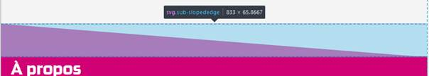La décoration de certaines pages est faite à l’aide d’images svg présentes dans le code, ce sont les diagonales roses et grises. Ces images sont purement décoratives, mais ne sont pas correctement identifiées.
Un utilisateur aveugle qui navigue avec un lecteur d’écran va accéder à ces images alors qu’elles ne servent pas le propos de la page.
Images porteuses d'information
Il est nécessaire de donner une alternative pertinente dans le cas où la suppression de l'image entraînerait un problème de compréhension des contenus pour les utilisateurs aveugles notamment.
Constats sur le site
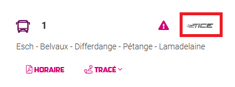Dans les pages d’horaires de bus, des images donnent l’indication du transporteur, mais ces images n’ont pas d’alternative renseignée.
Images porteuses d'information complexe
Certaines images porteuses d'informations sont complexes et nécessitent une description détaillée, pertinente, structurée et adjacente à l'image afin de permettre aux personnes ne percevant pas les images (comme les personnes aveugles), ou ayant des difficultés à les comprendre lorsqu'elles contiennent du texte (personnes ayant des difficultés de lecture, comme les dyslexiques par exemple) d'accéder à l'information.
Il sera possible de masquer cette description et de prévoir un bouton permettant à l'utilisateur de l'afficher si besoin (par exemple : « Afficher la description de l'image »). Voir un exemple de ce mécanisme. Il est également possible de proposer un lien adjacent à l'image vers la description détaillée.
Constats sur le site
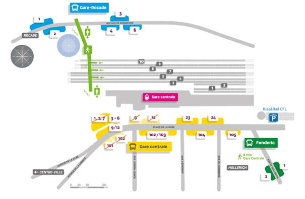Dans la page « Perturbations et travaux », l’image qui décrit la position des quais n’a pas de description détaillée.
Images textes
Lorsque des images textes peuvent être reproduites en HTML et CSS, vous ne devez pas utiliser d'images.
Les textes doivent être réalisés en HTML et CSS afin de permettre aux utilisateurs qui en ont besoin d'adapter leur lisibilité (agrandissement des caractères, modification des couleurs, des polices…).
Il est également possible de conserver les images textes et de fournir à l'utilisateur un mécanisme de remplacement qui lui permet, avec un bouton par exemple, de remplacer toutes les images textes en textes stylés.
Constats sur le site
Dans le carrousel de la page d’accueil, l’image promotionnelle pour mTicket comporte du texte en image, porteur d’information.
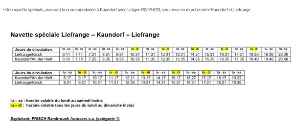Dans la page « Perturbations et travaux », on trouve de nombreuses images avec du texte. Ces images exposent souvent des tableaux d’horaires. Ceci est une problématique majeure, de nombreux utilisateurs sont impactés par ces informations uniquement disponibles sous format image : les utilisateurs aveugles en premier lieu ne pourront jamais avoir accès à ce contenu, également les utilisateurs qui ont besoin d’adapter les caractères pour leur besoin de lecture ne le pourront pas sur ce type de contenu.
Ressources
- Fiche 1 : Images — Guide du concepteur RGAA
- Fiche 9 : Images — Guide de l'intégrateur RGAA
- Fiche 1 : Images — Guide « Contribuer sur le web de manière accessible »
Cadres
L'absence d'identification des cadres peut poser un problème de repérage dans la structure de la page ou de compréhension des contenus pour les personnes aveugles.
Constats sur le site
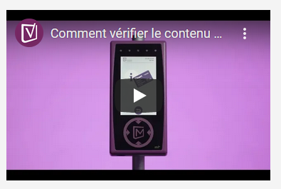Les vidéos (par exemple dans la page mKaart) sont intégrées dans des cadres, mais elles ne possèdent pas d’attribut title.
Couleurs
Recommandation
Ne pas donner l'information uniquement par la couleur et utiliser des contrastes de couleurs suffisamment élevés pour les textes et les composants d'interface.
Contrastes des textes
Plusieurs couleurs présentent un rapport de contraste insuffisant, ce qui peut poser problème aux grands malvoyants et aux déficients visuels qui ont des difficultés à percevoir les couleurs ou les contrastes.
Rapports de contrastes définis par le RGAA
- Pour les textes qui ont une taille de police calculée inférieure à 24px sans effet de graisse ou une taille de police calculée inférieure à 18,5px avec effet de graisse, le rapport de contraste entre la couleur du texte (y compris le texte en image) et son arrière-plan doit être de 4.5:1, au moins.
- Pour les textes qui ont une taille de police calculée supérieure ou égale à 24px sans effet de graisse ou une taille de police calculée supérieure ou égale de 18,5px avec effet de graisse, le rapport de contraste entre la couleur du texte (y compris le texte en image) et son arrière-plan doit être de 3:1, au moins.
Vous pouvez foncer les couleurs pour obtenir le rapport de contraste exigé.
Si la charte graphique ne peut être modifiée, fournissez une méthode aux utilisateurs pour consulter le site avec des contrastes suffisants. Ceci peut être réalisé simplement avec une fonctionnalité JavaScript et une surcharge CSS des couleurs.
Vous pouvez voir un exemple de ce type de mécanisme sur le site sncf.com. Dans les réglages d'accessibilité, vous trouverez une option qui permet d'afficher le site avec des contrastes renforcés et inversés.
Constats sur le site
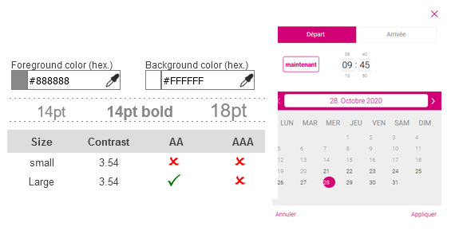Sur la page d’accueil, dans la fenêtre modale permettant de choisir l’heure, de nombreux textes en gris sont insuffisamment contrastés. C’est le cas des en-têtes du tableau, et de l’étiquette « Arrivée » (gris #888888 sur fond blanc, ratio de 3.54).
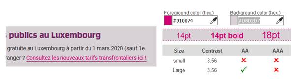Les liens en rose (#D10074) sur le fond violet clair (#D8D2D7) ont un rapport de contraste de 3.56, ce qui est insuffisant.
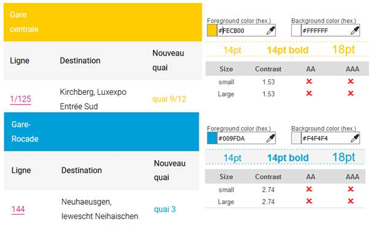Dans certaines pages, par exemple la page « Perturbations et travaux » (P11 de l’échantillon), le jaune (#FECB00) est utilisé, mais il offre un rapport de constate insuffisant (1.53) lorsqu’il est utilisé avec le blanc. De même que le bleu (#009FDA) utilisé avec un fond blanc ou gris (#f4f4f4) présente un rapport de contraste insuffisant (2.74).
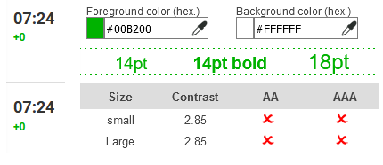Dans le planificateur, le vert (#00b200, utilisé notamment pour indiquer les minutes supplémentaires de la prochaine arrivée) a un rapport de contraste de 2.85 avec le blanc.
Contraste des composants d'interface
Les composants d'interface, les illustrations porteuses d'information ou encore les mises en couleurs porteuses d'information doivent être suffisamment contrastés pour être perçus par les utilisateurs ayant des troubles de perception des couleurs. Par exemple, une icône porteuse d'information devra avoir un rapport de contraste avec la couleur de fond de 3. De même, pour un champ de saisie de formulaire, dont la zone active est matérialisée par sa bordure, alors la couleur de cette bordure devra avoir un rapport de contraste de 3 avec la couleur de fond de la page.
Constats sur le site
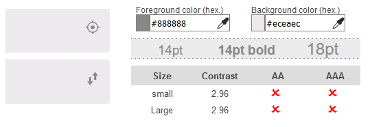Dans les champs « Départ » et « Arrivée » du formulaire de la page d’accueil, les boutons de géolocalisation et d’inversion des gares d’arrivée et de départ sont matérialisés uniquement par des icônes en gris (#888888). Le rapport de contraste avec le fond gris clair (#ECEAEC) est insuffisant (2.96).
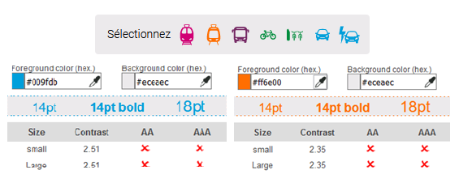Dans le formulaire de recherche d'itinéraire, dans le champ « Sélectionnez », les modes de transports sont figurés par des icônes, mais toutes n'ont pas un rapport de contraste avec le fond gris. C’est par exemple le cas pour le bleu clair (#009fdb) des icônes de voiture qui a un rapport de contraste de 2.51 avec le fond gris (#eceaec) et l’orange (#ff6e00) du tramway qui a un rapport de contraste de 2.35 avec ce même fond gris.
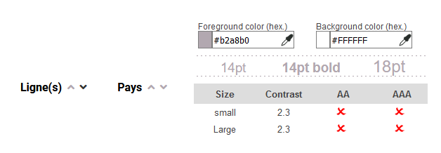Dans certaines pages, les données de tableaux sont triables. Des composants symbolisés par des chevrons permettent de faire un tri ascendant ou descendant. Lorsqu’ils n’ont pas été activés, la couleur du composant (violet clair #b2a8b0) a un rapport de contraste de 2.3 avec le fond blanc. Ce contraste insuffisant va limiter la perception de ces fonctionnalités aux utilisateurs qui perçoivent mal les couleurs.
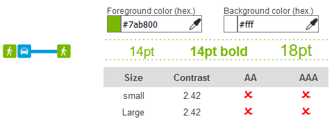Dans le planificateur, on trouve également des composants d’interfaces avec des contrastes problématiques, par exemple l’icône piéton qui est affichée dans les trajets, le vert utilisé (#7ab800) n’est pas suffisamment contrasté pour être bien perçu par certains utilisateurs (ratio de 2.42).
Information par la couleur
Lorsqu'une information est donnée par la couleur, il faut qu'elle soit également véhiculée par une autre méthode, par exemple par un texte qui donne la même information, pour être perçue par les utilisateurs aveugles.
Il faut également donner un indice visuel autre que la couleur, afin de répondre aux besoins des personnes déficientes visuelles (les daltoniens par exemple). Il peut s'agir d'un symbole, d'une texture, de chiffres.
Constats sur le site
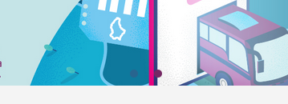Dans le carrousel de la page d’accueil, la slide active est mise en évidence par la couleur uniquement.
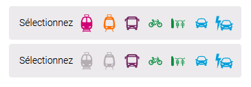Dans le formulaire de la page d’accueil, lorsqu’on sélectionne un moyen de transport, l’état sélectionné est symbolisé uniquement par un changement de couleur. Un changement de forme supplémentaire est nécessaire pour permettre aux utilisateurs qui ont des problèmes de perception des contrastes de percevoir cette différence.
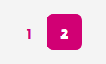Dans les systèmes de pagination de pages (comme les résultats de recherche), l’information de page active est uniquement donnée par la couleur (et l’inversion de contraste). Aucune information n’est utilisable par les technologies d’assistance pour véhiculer cette information aux utilisateurs aveugles par exemple.
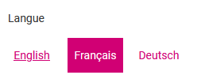Dans le planificateur, la langue choisie est mise en évidence par la couleur, mais aucune information dans le code ne permet aux technologies d’assistance de déterminer cet état et donc de la restituer aux utilisateurs aveugles.
Multimédia
Recommandation
Donner si nécessaire à chaque média temporel une transcription textuelle, des sous-titres synchronisés et une audiodescription synchronisée pertinents. Donner à chaque média non temporel une alternative textuelle pertinente. Rendre possible le contrôle de la consultation de chaque média temporel et non temporel au clavier et s'assurer de leur compatibilité avec les technologies d'assistance.
Contrôles
Le lecteur vidéo utilisé doit lui aussi être accessible :
- il doit être utilisable au clavier et à la souris ;
- il doit proposer les contrôles essentiels (lecture/pause, contrôle du volume, activation/désactivation des sous-titres, etc.) ;
- il doit être compatible avec les API d'accessibilité ;
- ses boutons et composants d'interface porteurs d'information doivent être suffisamment contrastés (rapport de contraste de 3:1 avec la couleur d'arrière-plan contiguë).
Constats sur le site
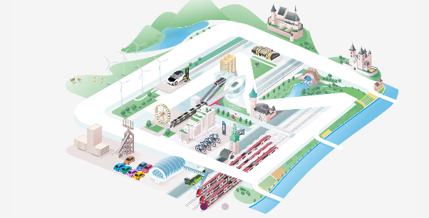Dans le carrousel de la page d’accueil, la vidéo contenue dans le carrousel ne peut jamais être arrêtée. Il lui manque un bouton permettant de la stopper et la relancer. Il est important pour les utilisateurs avec un trouble de l’attention de pouvoir maîtriser ces éléments en mouvement pour éviter de perturber leur parcours du reste de la page.
Tableaux
Recommandation :
Donner un résumé à chaque tableau de données complexe, s'assurer que pour chaque tableau de données ayant un titre, ce titre est pertinent, identifier clairement les cellules d'en-tête, utiliser un mécanisme pertinent pour lier les cellules de données aux cellules d'en-tête. Pour chaque tableau de mise en forme, veiller à sa bonne linéarisation.
Tableau de données
Un tableau de données doit répondre à certains enjeux pour être exploité correctement par les lecteurs d'écran. Les enjeux sont les suivants :
- Le tableau doit posséder un titre permettant de l'identifier (
<caption>) ; - Les en-têtes doivent être identifiés (balises
<th>) et doivent pouvoir être restitués lorsque l'utilisateur parcourt chaque cellule à l'aide de son lecteur d'écran (attributsscopesi nécessaire).
Constats sur le site
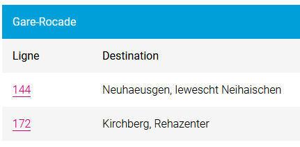Dans la page « Perturbations et travaux », on trouve des tableaux dans l’onglet « Travaux tram ». Ils ont un titre associé visuellement, par exemple « Gare-rocade », mais ce titre n’est pas correctement relié (avec la balise caption). De plus, dans ces tableaux, les en-têtes de colonnes ne sont pas implémentés dans les balises appropriées (th).
Liens
Recommandation :
Donner des intitulés de lien explicites, grâce à des informations de contexte notamment, utiliser le titre de lien le moins possible. S'assurer que le nom visible est contenu dans le nom accessible.
Pertinence des intitulés
Un lien possède généralement un intitulé et un contexte. L'intitulé est le texte présent dans la balise <a> (ou la valeur de l'attribut alt de l'image dans le cas d'un lien-image) et le contexte du lien est représenté par le titre qui précède, le titre du lien (l'infobulle) ou tout simplement le texte dans lequel il est inséré.
Pour être considéré comme pertinent, l'intitulé d'un lien doit permettre de comprendre sa destination en prenant en compte son contexte.
Constats sur le site
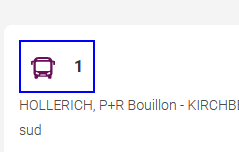Dans la page « Bus (horaires et lignes) », chaque item de la liste débute par un lien, dont l’intitulé est le seul numéro de la ligne « 1 » , « 2 », etc.. Visuellement, l’icône permet de mettre en contexte, mais sans la mise en forme, il peut être difficile de comprendre la destination du lien.
Liens-images
Un lien-image est un lien dont le contenu n'est composé que d'une ou plusieurs images (balises <img>). Généralement, ces liens ne posent aucun problème aux utilisateurs voyants qui parviennent à comprendre la destination du lien grâce à l'image et son contexte. En revanche, pour une personne aveugle, ces liens doivent obligatoirement posséder un intitulé.
L'intitulé d'un lien-image est généré grâce à l'alternative de l'image contenue dans ce lien.
Constats sur le site
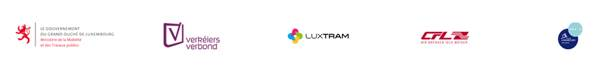Dans l’onglet « À venir » de la page « Perturbations et travaux », les liens images en fin de document sont uniquement composés d’images qui n’ont pas d’alternative renseignée. Ce sont donc des liens vides.
Présence d'intitulés
Un lien doit toujours posséder un intitulé permettant à l'utilisateur de comprendre sa destination. Les liens contenant uniquement des objets graphiques (images, icônes, etc.) posent souvent problème pour les personnes aveugles.
Pour ces liens, la technique pour fournir un intitulé dépend des cas :
- Si ces liens-images sont construits avec des balises images (
<img />), renseignez l'alternative de l'image (par exemple :<a href="https://twitter.com/example"><img src="path/to/img/png"alt="Suivez-nous sur Twitter" /></a>) - Si ces liens-images sont construits avec des balises SVG (
<svg>), alors ajoutez sur cette baliserole="img"pour indiquer aux lecteurs d'écran qu'il s'agit bien d'une image et un intitulé pararia-label="Suivez-nous sur Twitter".
Constats sur le site
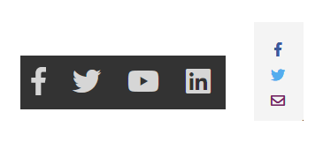Dans le pied de page, les liens des réseaux sociaux sont des liens vides, ils n’ont pas d’intitulés. On retrouve la même problématique de liens vides avec les liens de réseaux sociaux qui s’affichent sur la gauche de certaines pages.
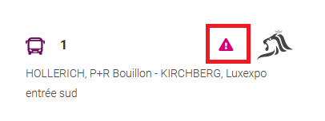Dans les pages d’horaires, les liens menant vers la page des perturbations sont des liens vides. Un utilisateur aveugle ne pourra pas en connaître la destination.
Scripts
Recommandation :
Donner si nécessaire à chaque script une alternative pertinente. Rendre possible le contrôle de chaque code script au moins par le clavier et la souris et s'assurer de leur compatibilité avec les technologies d'assistance. Identifier les messages de statut lorsque c'est nécessaire.
Utilisation des boutons et des liens
Pour les aveugles et les grands malvoyants qui utilisent un lecteur d'écran, ce manque de distinction claire entre les liens et les boutons peut poser de graves problèmes.
Ainsi, un bouton implémenté sous la forme d'un lien qui déclenche une action de la page, risque de perturber l'utilisateur qui s'attendra au chargement d'une nouvelle page.
De manière générale, les liens devraient être réservés à l'affichage d'une nouvelle page ou la création de liens d'accès rapide dans le contenu. Dans tous les autres cas, l'emploi d'un bouton d'action est plus pertinent.
Enfin, chaque bouton doit avoir un nom accessible défini, soit par l'intermédiaire d'un texte (visible ou positionné hors écran) ou d'une propriété title, aria-label ou aria-labelledby.
Constats sur le site
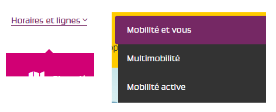Certains composants qui gèrent des événements JavaScript, comme les composants permettant d’afficher/masquer les contenus, emploient des liens en place des boutons. C’est le cas de certaines entrées de sous-menu, comme « Horaires et lignes », qui ne sont pas des liens vers une page, mais un composant permettant d’afficher le sous-menu. On en trouve également dans le menu latéral accessible depuis le bouton burger, certaines entrées de premier niveau sont en fait des composants permettant d’afficher un sous-menu (par exemple « Mobilités et vous »).
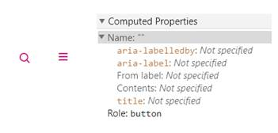Les boutons d’affichage du moteur de recherche et le bouton burger n’ont pas d’intitulés. Un utilisateur aveugle n’aura accès qu’à la sémantique « bouton » sans pouvoir savoir quelle action ils sont susceptibles de déclencher.
Sur la page d’accueil, le bouton de fermeture du bandeau « Situation actuelle des transports publics » n’a pas d’intitulé.
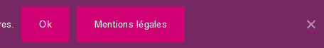Dans le bandeau des cookies, les composants « OK » et la croix permettant de masquer le contenu sont intégrés dans des liens, alors que ce devraient être des boutons. De plus, leurs intitulés « OK » ne sont pas suffisamment explicites.
Fenêtres modales
Constats sur le site
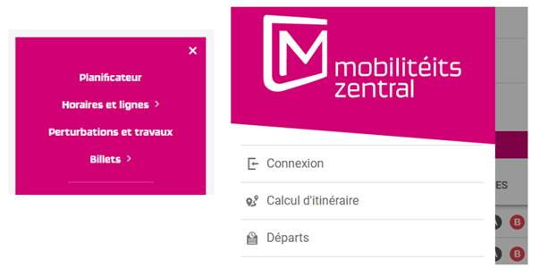En vue mobile, le menu se présente dans une fenêtre modale, mais n’en respecte pas les principes définis dans le motif de conception ARIA Dialog, notamment la gestion du parcours au clavier : dans les fenêtres modales, le parcours de tabulation doit être restreint aux seuls éléments contenus dans le composant, ce qui n’est pas le cas pour ce menu. Également, dans le planificateur, le menu se présente comme une fenêtre modale, mais implémente partiellement les éléments requis pour un tel composant.
Gestion de la visibilité de zones
Le site possède des fonctionnalités d'affichage ou de masquage des zones de contenus. L'état affiché/masqué du contenu additionnel doit pouvoir être disponible pour les technologies d'assistance afin que les utilisateurs aveugles accèdent à cet état.
Constats sur le site
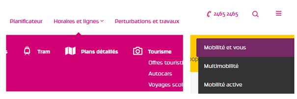Les sous-menus du premier menu de navigation et le contenu du menu accessible depuis le bouton burger (ainsi que ses sous-menus), gèrent la visibilité de zones, mais leur état déplié/replié n’est pas accessible aux technologies d’assistance.
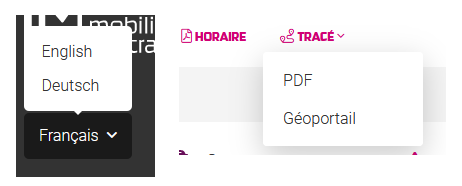C’est également le cas pour le bouton d’affichage de la langue, les boutons « tracé » dans les fiches horaires.
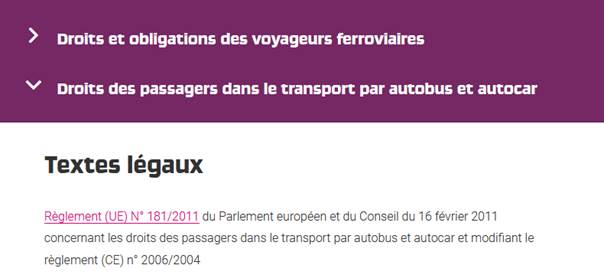On en trouve d’autres exemples dans les pages intérieures, comme les pages « Droits des voyageurs », où l’affichage de contenus entiers est géré par des composants qui ne sont pas utilisables au clavier. Ainsi, une personne naviguant au clavier ne pourra jamais afficher les contenus associés. De plus, l’état des composants (plié/déplié) n’est pas disponible pour les technologies d’assistance.
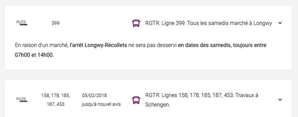On retrouve des composants similaires avec les mêmes erreurs dans la page « Perturbations et travaux ».
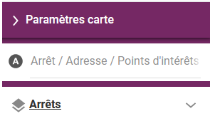Dans le planificateur, le composant « Paramètres de carte » doit implémenter la même correction afin de rendre disponible son état affiché/masqué aux technologies d’assistance.
Message de statut
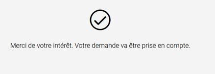Dans la page de contact, lorsque le formulaire est soumis avec succès, le formulaire est masqué et un message apparaît. L’utilisateur aveugle n’a pas conscience de l’apparition de ce message qui ne lui est pas restitué.
Éléments obligatoires
Recommandation
Vérifier que chaque page web a un code valide selon le type de document, un titre pertinent et une indication de langue par défaut. Vérifier que les balises ne sont pas utilisées uniquement à des fins de présentation, que les changements de langues et de direction de sens de lecture sont indiqués.
Indication de langue
Les lecteurs d'écran utilisent les indications de langue pour vocaliser le contenu dans la langue définie. La page doit contenir une définition de langue principale (généralement sur l'élément html).
Ensuite, les éléments de langue étrangère présents dans le contenu doivent être signalés. Si, dans la page, on trouve des termes absents du dictionnaire de la langue française, il faut les identifier afin que le lecteur d'écran puisse les restituer dans la langue appropriée. En effet, une mauvaise prononciation pourrait mener à des incompréhensions pour les utilisateurs qui reposent uniquement sur des restitutions orales. Les noms propres sont exclus de cette obligation.
Constats sur le site
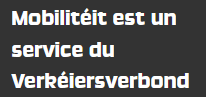On trouve de nombreux termes en luxembourgeois dans la version française du site. Par exemple : « Verkéiersverbond ».
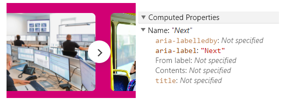Dans les composants JavaScript, on retrouve également régulièrement ce problème. On trouve des boutons avec des intitulés en anglais (par exemple dans les carrousels, les boutons de navigation ont les intitulés « previous » et « next »). De même, dans les champs d’autocomplétion (par exemple dans le formulaire de la page d’accueil ou dans le planificateur), tous les messages d’aide ou de statut (consécutifs à des changements d’état comme l’interversion gare de départ/gare d’arrivée) restitués aux utilisateurs de lecteur d’écran sont rédigés en anglais.
Titre de la page
Le titre de la page (visible dans l'onglet du navigateur) est un élément de repère dans le site web. Pour les utilisateurs de lecteur d'écran (utilisateurs aveugles ou grands malvoyants), c'est le premier élément restitué par le lecteur d'écran au chargement de la page. Cela permet de donner du contexte aux utilisateurs qui n'ont pas une vision globale de la page. Pour les utilisateurs avec des troubles de la mémoire, c'est l'information à laquelle ils accèdent lorsqu'ils naviguent avec l'historique de navigation du navigateur. Il est donc essentiel d'avoir des titres de pages pertinents, concis et très souvent uniques dans le site, et qui reflètent de la position de l'utilisateur dans le site web.
Il est des cas particuliers, comme les pages dont le contenu est une liste de résultats paginés (ex. : les résultats de recherche), pour lesquels le titre doit refléter la nature de la recherche ainsi que le numéro de page en cours de consultation.
Constats sur le site
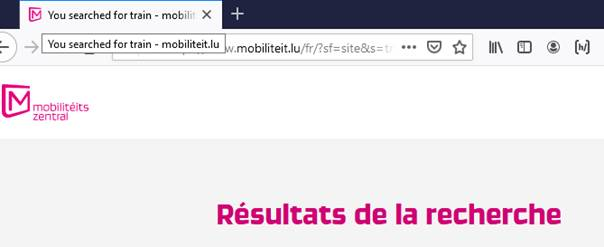La page des résultats de recherche a un titre en anglais (alors que le site est consulté dans sa version française). De plus, ce titre ne reprend pas le numéro de la page en cours de consultation.
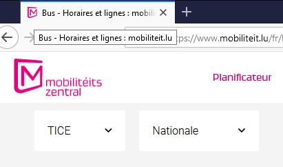De même, dans les pages qui proposent des filtres, comme la page des horaires et lignes, le titre de la page ne reprend pas les filtres appliqués.
Validité du code
Les technologies d'assistances, comme les lecteurs d'écran ou les systèmes de contrôle à la voix, s'appuient sur le code des pages pour générer les restitutions et les interactions avec l'utilisateur. Un lecteur d'écran va exploiter le code HTML fourni par le navigateur et les informations accessibles au moyen des API d'accessibilité du système.
Si le code comporte des erreurs (balises mal fermées par exemple), il y a un risque que les fonctionnalités du lecteur d'écran soient impactées, comme la navigation de lien en lien par exemple.
Pour vérifier la conformité d'une page, vous pouvez utiliser le validateur mis à disposition par le W3C.
Constats sur le site
Le code source est relativement robuste dans l’ensemble du site. On constate quelques erreurs comme par exemple des erreurs d’imbrications de balises, des valeurs d’identifiants dupliquées (sur la page des résultats de recherche), des erreurs de fermetures de balises.
Balises utilisées à des fins de présentation
Les éléments de structure HTML ont chacun une sémantique particulière (paragraphe, titre, image, lien, etc.). Si les éléments sont mal employés (détournés de leur utilité première), cela peut poser des problèmes aux utilisateurs qui naviguent à l'aide d'une technologie d'assistance (lecteur d'écran, plug-in…). En effet, les technologies d'assistance mettent des raccourcis à disposition permettant de naviguer rapidement entre certains types d'éléments (paragraphes, titres, listes, etc.). Si ces éléments sont mal employés, les utilisateurs ne peuvent pas utiliser ces fonctionnalités de repère et de navigation dans le contenu.
Constats sur le site
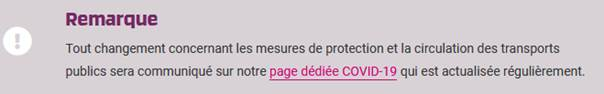Certains contenus du site sont structurés uniquement avec des éléments sans sémantique (div ou span). C’est le cas par exemple du texte « Remarque » dans les pages d’actualités.
Dans certaines pages, des paragraphes vides (par exemple « Droits des voyageurs ») sont utilisés pour créer des espacements. Pour réaliser des mises en forme, les pages web doivent utiliser uniquement les feuilles de styles et ne pas employer de balises sémantiques pour éviter aux utilisateurs aveugles de parcourir des contenus vides.
Structuration de l'information
Recommandation
Utiliser des titres, des listes, des abréviations et des citations pour structurer l'information. S'assurer que la structure du document est cohérente.
Titres
Le titrage des contenus est une étape importante dans la structuration des contenus. Cela répond à deux besoins :
- identifier rapidement un contenu recherché ;
- naviguer rapidement dans le contenu en se déplaçant de titre en titre.
Un titrage correct fournit à l'utilisateur de lecteur d'écran un plan du document et lui permet de naviguer de titre en titre pour se déplacer plus rapidement dans le contenu de la page.
Pour valider la structure de votre page, vous pouvez utiliser l'extension Firefox HeadingsMap. Lorsque l'extension est active, sélectionnez l'onglet « Headings » et vérifiez la cohérence et l'imbrication des titres.
Constats sur le site
La structure des titres est défaillante de manière globale sur le site et ne reflète pas toujours l’imbrication réelle des contenus.
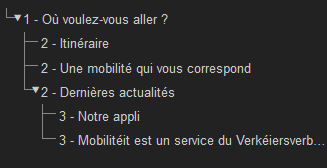Par exemple, sur la page d’accueil, les titres du pied de page « Notre appli » et « Mobilitéit est un service du Verkéiersverbond » sont des titres de niveau 3, ce qui implique qu’ils seraient dépendants du titre « Dernières actualités ». Cela n’est pas cohérent avec la logique éditoriale. Ces titres devraient être placés au même niveau que le titre de niveau 1.
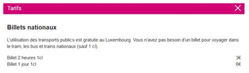Dans le planificateur, les fenêtres modales accessibles depuis le menu ont un titre identifié visuellement (par exemple « Tarifs ») qui n’est pas correctement structuré dans le code.
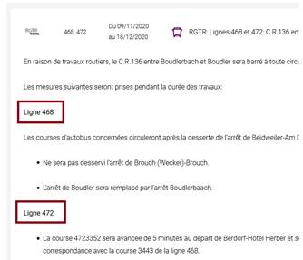Dans certaines pages, des éléments de texte structurent le contenu, mais ne sont pas identifiés comme des titres. C’est le cas par exemple dans la page « Perturbations et travaux » où chaque trajet possède un ensemble d’informations, détaillé par ligne de transports. Ces lignes sont simplement mises en gras et ne sont pas structurées comme des titres.
Listes
La structuration en listes permet aux utilisateurs de lecteurs d'écran de consulter plus rapidement le contenu, grâce à des raccourcis spécifiques, et d'accéder directement à une liste ou de la passer sans avoir à en parcourir tous les items.
Constats sur le site
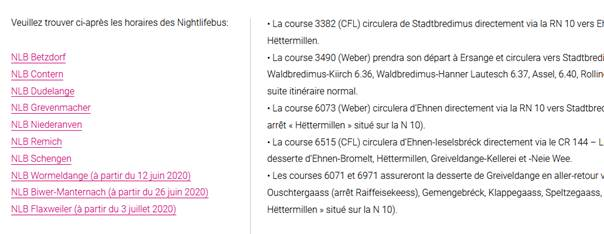Dans certains contenus, des éléments se présentant comme des listes ne sont pas structurés comme tels. Par exemple, dans la page « Perturbations et travaux », de nombreux contenus ont l’apparence d'une liste, mais ne sont pas structurés comme tel (successions de liens, ou listes simulées par de nombreux paragraphes).
Structure du document
L'utilisation correcte des balises HTML5 et des landmarks ARIA va permettre d'enrichir la restitution pour les utilisateurs aveugles qui ne perçoivent pas les mises en forme : la navigation principale ne sera plus perçue simplement comme une liste de liens, elle sera restituée à l'utilisateur comme un élément de navigation, par l'intermédiaire du lecteur d'écran qui annoncera « région » ou « repère ».
De plus, ces marqueurs sémantiques vont également constituer des éléments de navigation rapide dans la page. Grâce à un raccourci clavier, certains utilisateurs vont pouvoir naviguer plus rapidement entre les régions qui auront été ainsi identifiées.
Constats sur le site
Les éléments de navigation, l’en-tête, le contenu et le pied de page ne sont pas correctement identifiés avec les balises HTML5 de structure.
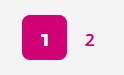Dans le reste du site, les éléments de pagination comme dans les résultats de recherche sont considérés comme des éléments de navigation et doivent être identifiés comme tels.
Présentation de l'information
Recommandation
Utiliser des feuilles de styles pour contrôler la présentation de l'information. Vérifier l'effet de l'agrandissement des tailles des caractères sur la lisibilité. S'assurer que les liens sont correctement identifiables, que la prise de focus est signalée, que l'interlignage est suffisant et donner la possibilité à l'utilisateur de contrôler la justification des textes. S'assurer que les textes cachés sont correctement restitués et que l'information n'est pas donnée uniquement par la forme ou la position d'un élément. S'assurer que les contenus sont lisibles et utilisables dans une fenêtre de largeur réduite. Veiller à ce que l'application de paramètres typographiques n'entraîne pas la perte de contenu ou de fonctionnalité. S'assurer que les contenus qui apparaissent au survol et à la prise de focus puissent être contrôlés par l'utilisateur.
Utilisation de CSS exclusivement
Certains utilisateurs qui présentent des troubles de la lecture (personnes dyslexiques par exemple), vont avoir besoin d'adapter la présentation des pages avec leurs propres mises en forme. Cela est possible sans difficulté si le site web utilise exclusivement les feuilles de styles CSS pour réaliser les mises en forme. Cependant, l'utilisation d'attributs et balises HTML de mise en forme rend ces adaptations plus compliquées, sinon impossibles.
Le RGAA donne la liste des attributs et balises qu'il est interdit d'utiliser.
Constats sur le site
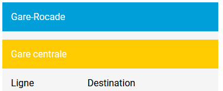Dans la page « Perturbations et travaux » les couleurs de fond des titres des tableaux sont réalisées avec des attributs de mise en forme.
Contenu visible sans les feuilles de styles
Des contenus informatifs insérés avec CSS (avec des images de fond contenant du texte en image) peuvent ne pas être restitués par les lecteurs d'écran ou les systèmes de loupes vocalisés.
Constats sur le site
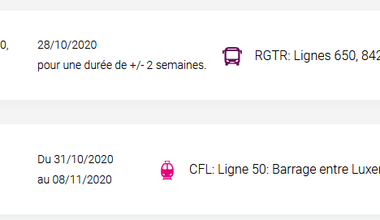Dans la page « Perturbations et travaux » , l’icône symbolisant le moyen de transport (train ou tram par exemple) est insérée en CSS et il n’existe aucune alternative à proximité qui pourrait faire office d’alternative. Un utilisateur aveugle n’aura pas accès à cette information.
Couleur de police et couleur de fond des textes
De nombreux navigateurs permettent aux utilisateurs de choisir une couleur par défaut pour le texte et le fond, à utiliser sans avoir à modifier tous les styles spécifiés par l'auteur. Cela permet aux utilisateurs de visualiser des pages dont les couleurs n'ont pas été spécifiées par l'auteur dans leur combinaison de couleurs préférée.
Pour cette raison, si l'auteur du site a défini une couleur de police sans spécifier de couleur de fond associée, il est possible que le contraste résultant ne soit plus suffisant pour l'utilisateur.
Constats sur le site
Dans la page d’accueil, certains éléments ont une couleur de police définie, mais pas de couleur de fond associée (ici le titre « où voulez-vous aller ? »). Inversement, des textes ont une couleur de fond définie, mais pas de couleur de police (c’est le cas des étiquettes de champs de formulaires par exemple).
Agrandissement des tailles de texte
Certaines personnes déficientes visuelles, également des personnes ayant des difficultés de lecture comme les personnes dyslexiques, ont besoin d'adapter la taille du texte à l'écran.
L'agrandissement des caractères ne doit pas provoquer de perte d'informations. À 200%, le contenu doit rester lisible et compréhensible, toutes les informations doivent rester présentes.
Il existe plusieurs méthodes pour contrôler l'agrandissement des caractères :
- La fonction d'agrandissement du texte du navigateur (le zoom texte) ;
- Les fonctions de zoom graphique du navigateur ;
- Un composant d'interface propre au site permettant d'agrandir le texte ou de zoomer.
Constats sur le site
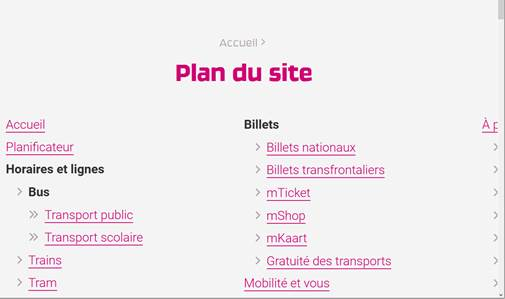Les liens de la dernière colonne de droite de la page de plan du site ne sont plus lisibles lorsqu’on applique un zoom graphique de 200%.
Visibilité de la prise de focus
Les personnes avec un handicap moteur qui naviguent au clavier peuvent rencontrer des difficultés considérables à utiliser du contenu si elles ne sont pas en mesure de repérer l'indication visuelle du focus et ses déplacements.
Constats sur le site
La prise de focus n’est presque jamais visible sur les composants du site. Un style du focus a été redéfini sur la presque totalité des éléments, mais il n’est pas suffisamment visible.
Par exemple, la prise de focus sur le bouton burger provoque un changement de couleur de l’icône, mais ce changement de couleur n’est pas perceptible. De plus, l’outline natif du navigateur a été supprimé, on trouve dans les CSS la déclaration :
.:focus{
outline:none
}Largeur réduite
Il s'agit ici de tester la capacité des contenus à se réorganiser lorsqu'un utilisateur malvoyant doit réaliser un zoom graphique de 400%. À ce titre, on teste la lisibilité des contenus dans une fenêtre de largeur réduite à 320px.
On s'assure que l'utilisateur a accès à tous les contenus et que tous les contenus sont lisibles sans avoir recours à la barre de défilement horizontale.
Constats sur le site
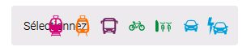Sur la page d’accueil, les icônes des modalités de transport chevauchent l’étiquette du champ, ce qui provoque un défaut de lisibilité.
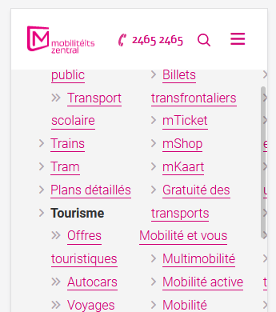Le contenu de la page de plan du site est tronqué sur la droite dans une fenêtre de 320px de large.
Paramètres typographiques
Les utilisateurs malvoyants et/ou dyslexiques ont souvent recours à des adaptations de la présentation des textes. Pour cela, on doit s'assurer que de tels paramètres ne viennent pas perturber leur lecture sur le site.
Les présentations doivent supporter l'application de paramètres typographiques visant à augmenter les interlignages, interlettrages, les espaces entre les mots et entre les paragraphes. L'application de ces paramètres ne doit pas entraîner la perte de contenus ou de fonctionnalité :
- L'interlignage augmenté de 1,5 fois la taille de la police
- L'espacement entre les paragraphes augmenté de 2 fois la taille de la police
- L'espacement des lettres augmenté de 0,12 fois la taille de la police
- L'espacement des mots augmenté jusqu'à 0,16 fois la taille de la police
Constats sur le site
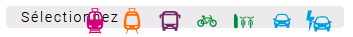Sur la page d’accueil, l’application de ces paramètres provoque un défaut de lisibilité sur le composant « Sélectionnez », les icônes chevauchent l’étiquette.
Formulaires
Recommandation :
Associer pour chaque formulaire chacun de ses champs à son étiquette, grouper les champs dans des blocs d'informations de même nature, regrouper les items de même nature dans les listes de choix, donner à chaque bouton un intitulé explicite. Vérifier la présence d'aide à la saisie, s'assurer que le contrôle de saisie est accessible et que l'utilisateur peut contrôler les données à caractère financier, juridique ou personnel.
Étiquettes et champs
Les champs de formulaires doivent tous posséder des étiquettes correctement reliées.
Une étiquette de champ est un texte situé à proximité du champ de formulaire qui permet de connaître la nature, le type ou le format des informations attendues.
De cette manière, lorsqu'un utilisateur entre dans le champ de saisie avec un lecteur d'écran, le lecteur d'écran lit le contenu de l'étiquette. L'utilisateur comprend alors ce qu'il doit saisir.
Sans cela, même si une étiquette est présente visuellement, l'utilisateur entendra « champ de saisie vide » en entrant dans le champ et ne saura donc pas quoi saisir.
Constats sur le site
Dans la page des horaires et lignes, les champs « Opérateur », « Type de ligne » et le champ de saisie « Lignes » qui permettent de filtrer les résultats n’ont pas d’étiquettes.

C’est également le cas du champ « Lignes opérateurs » et de la liste de sélection « type de transport » de la page « Perturbations et travaux ».
Étiquettes et champs accolés
Le RGAA 4 exige que chaque étiquette et le champ qu'elle contrôle soient accolés. En effet, si l'étiquette et son champ sont trop éloignés, les utilisateurs malvoyants qui utilisent une loupe d'écran peuvent échouer à faire correspondre l'étiquette et son champ, et donc ne pas saisir les données attendues dans les bons champs.
Constats sur le site
Dans le planificateur, dans le système de choix du moyen de transport pour l’onglet départ, les étiquettes sont éloignées de leurs cases à cocher. Ceci est problématique pour les utilisateurs de loupe d’écran qui, compte tenu du fait qu’ils doivent parcourir l'écran de gauche à droite pour accéder au contenu, peuvent difficilement faire le lien entre la case à cocher et l’étiquette lorsqu’ils sont trop éloignés visuellement. On trouve cette mise en forme dans de nombreux composants employant les cases à cocher dans le planificateur (par exemple aussi dans le composant « paramètres de carte »)
C’est aussi le cas pour les étiquettes d’autres types de champs, par exemple de liste de sélection ou de bouton switch.
Intitulés de bouton pertinents
Les boutons qui permettent d'interagir avec les formulaires doivent avoir des intitulés pertinents pour que l'utilisateur comprenne l'action du bouton.
Ces intitulés sont essentiels pour les personnes aveugles, afin qu'elles soient sûres de l'action qu'elles s'apprêtent à réaliser.
Constats sur le site

Le bouton de validation de formulaire de recherche n’a pas d’intitulé.
De même pour le bouton de validation du moteur de filtre de la page « Abonnement annuel regiozone ».
Contrôle de saisie et aide à la saisie
Les messages d'erreur de saisie des champs de formulaire doivent être liés correctement aux champs en erreur.
Vérifier que pour chaque message d'erreur la méthode suivante est utilisée.
Constats sur le site
Dans le formulaire de contact, on constate plusieurs erreurs :
- Les messages d’erreurs ne sont pas correctement reliés à leur champ respectif. Il sera compliqué pour un utilisateur aveugle d’accéder à ces messages d’erreurs ;
- Le champ email attend un format particulier, qui n’est pas spécifié à l’utilisateur et de plus, le message d’erreur devrait fournir également un exemple réel de saisie.
Navigation
Recommandation :
Faciliter la navigation dans un ensemble de pages par au moins deux systèmes de navigation différents (menu de navigation, plan du site ou moteur de recherche), un fil d'Ariane et l'indication de la page active dans le menu de navigation. Identifier les groupes de liens importants et la zone de contenu et donner la possibilité de les éviter par des liens de navigation interne. S'assurer que l'ordre de tabulation est cohérent et que la page ne comporte pas de piège au clavier. S'assurer que les raccourcis clavier qui utilisent une seule touche sont contrôlables par l'utilisateur.
Ordre de tabulation
Dans les pages qui proposent l’affichage dynamique (par exemple « Bus (horaires et lignes) »), le bouton « afficher plus » permet d’ajouter des résultats avant le bouton. Pour un utilisateur aveugle qui n’a pas une vision globale de la page, l’apparition de ces résultats ne sera pas perçue et il n’y accédera pas. Dans ces cas, il faut prévoir de repositionner le focus de l’utilisateur à l’endroit d’insertion des nouveaux contenus.
Dans le carrousel que l’on retrouve dans les pages intérieures (par exemple « Bus (horaires et lignes) »), permettant de naviguer dans les autres pages de la rubrique en cours de consultation, les boutons suivant/précédent devraient être atteints avant la zone de contenu du carrousel.
Dans le planificateur, dans la section des filtres supplémentaires, lorsqu'on change l'état du bouton « trajet direct uniquement », le focus est repositionné à un autre endroit (apparemment dans les composants en arrière-plan). Le focus devrait être laissé sur la case à cocher. On constate le même comportement pour les listes déroulantes (par exemple « correspondances »). Ce problème de positionnement de focus est problématique pour les utilisateurs aveugles qui naviguent avec un lecteur d’écran.
Liens d'accès rapide
On note l'absence d'un lien d'accès rapide au contenu au moins. Les liens d'accès rapides sont utiles aux utilisateurs qui naviguent au clavier, mais aussi aux utilisateurs malvoyants qui utilisent une loupe d'écran afin de sauter rapidement les éléments redondants, comme la navigation.
Pour cela, il est préférable que ces liens soient toujours visibles à l'écran. Malgré cela, ces liens peuvent être positionnés hors écran, mais doivent au moins être rendus visibles à la prise de focus.
Il est donc nécessaire d'implémenter au moins un lien d'accès rapide au contenu, qui permet de sauter toute la navigation principale.
Consultation
Recommandation
Vérifier que l'utilisateur a le contrôle des procédés de rafraîchissement, des changements brusques de luminosité, des ouvertures de nouvelles fenêtres et des contenus en mouvement ou clignotants. Ne pas faire dépendre l'accomplissement d'une tâche d'une limite de temps sauf si elle est essentielle et s'assurer que les données saisies sont récupérées après une interruption de session authentifiée. Proposer des versions accessibles ou rendre accessibles les documents en téléchargement. S'assurer que la consultation n'est pas dépendante de l'orientation de l'écran. Toujours proposer un geste simple en alternative d'un geste complexe permettant de réaliser une action.
Documents en téléchargement
Assurez-vous que chaque document soit accessible (cf. les Guides de créations de documents bureautiques accessibles), ou qu'il dispose d'une alternative accessible proposant le même contenu (par exemple, une version HTML correctement structurée).
Constats sur le site
Les PDF qui contiennent les horaires des bus ne sont pas accessibles. Par exemple on constate des problèmes de contraste (le rouge sur blanc), des icônes porteuses d’information qui ne sont pas restituées par un lecteur d’écran, et la structure même du document qui rend son exploitation difficile par un lecteur d’écran.
C’est également le cas des PDF qui donnent le tracé des lignes. Ces PDF détaillent le parcours complet de la ligne, et cette information n’est pas disponible dans un autre format sur le site.
Des formulaires d’abonnement sont également présents sur le site au format PDF. La structure de ces PDF ne permet pas à des utilisateurs de lecteurs d’écran de comprendre leur contenu. De plus, pour un utilisateur aveugle, il sera impossible de remplir ce formulaire pour faire sa demande.
Contenus en mouvement ou clignotants
Les contenus en mouvement peuvent être problématiques pour les utilisateurs avec des difficultés de lecture, en effet un contenu qui défile trop rapidement empêche d'accéder de fait à l'information. De plus, pour les personnes avec un déficit de l'attention, le mouvement les empêche de lire le reste de la page.
Il faut alors permettre aux utilisateurs d'arrêter et de redémarrer le contenu en mouvement , ou d'afficher tout le contenu sans le mouvement ou de masquer le contenu en mouvement et de le réafficher.
Constats sur le site
Sur la page d’accueil, le carrousel défile automatiquement et ne peut jamais être arrêté.